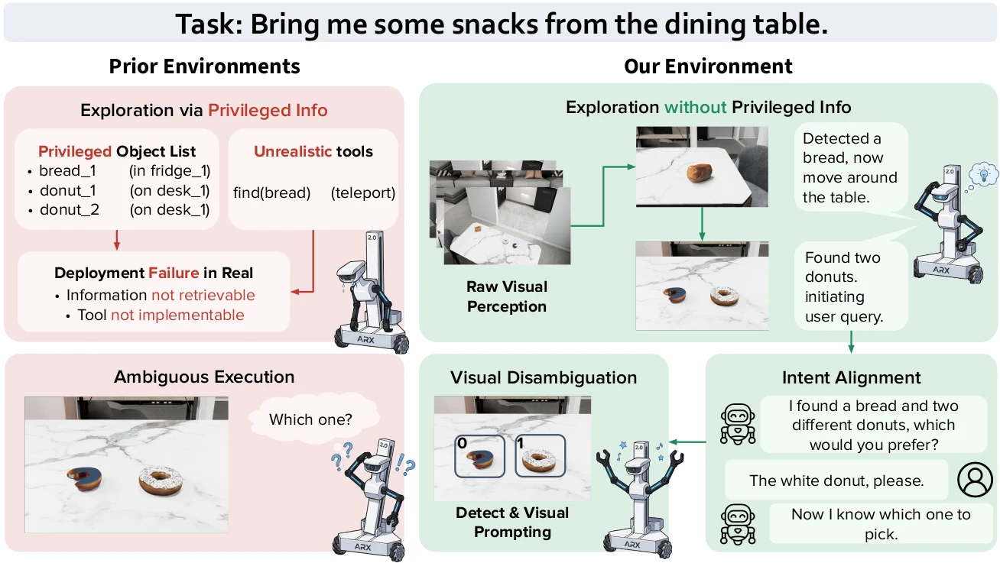
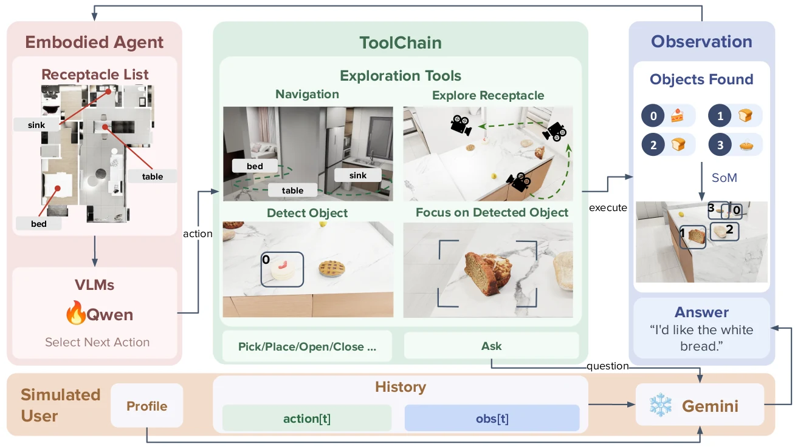
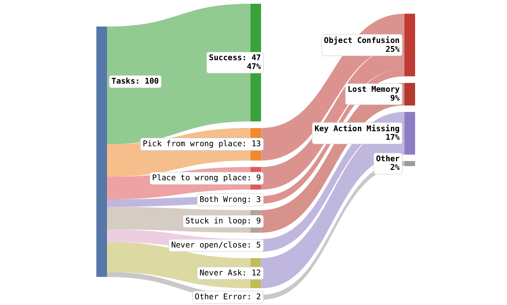
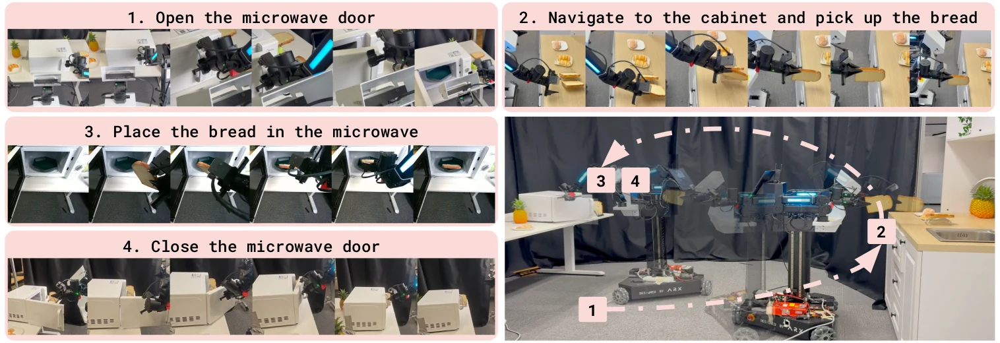
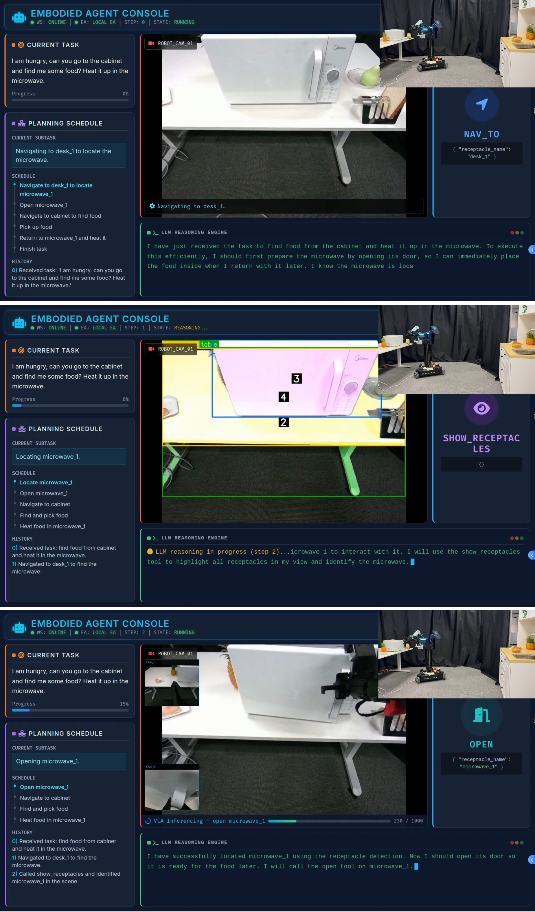
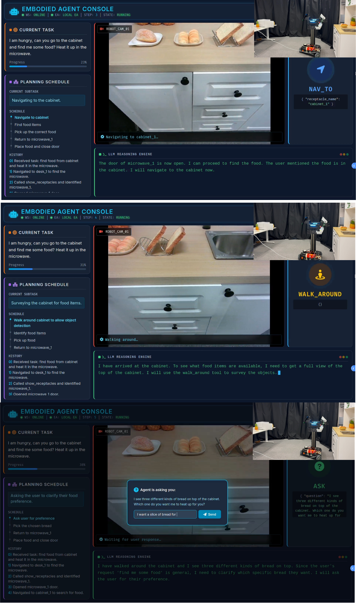

Privilege-free perception
Navigation, detection, Set-of-Mark prompting, and visual grounding replace hidden simulator state.
Watch a discovery trajectoryECCV 2026
Vision-Driven Embodied Agents for Open-World Mobile Manipulation


REAL in the physical world. The high-level policy controls an Ark LIFT2 mobile manipulator through the same tool interface used during simulation training.
Overview
REAL makes the deployment constraints visible: evidence must be gathered from RGB observations, ambiguity must be resolved by dialogue, and every high-level action must remain executable on the robot.
The deployment gap
Many embodied benchmarks expose global object lists, poses, or success signals. They can also assume a fully specified instruction. Those shortcuts conceal the two actions a deployed agent actually needs: explore and ask.
The REAL response
REAL provides a shared, sim-to-real tool interface without oracle perception, a simulated user for clarification, and a dual-stage SFT + online RL pipeline that teaches the policy to recover, reason, and communicate in a closed loop.

Navigation, detection, Set-of-Mark prompting, and visual grounding replace hidden simulator state.
Watch a discovery trajectoryA simulated user turns ambiguity into an observable decision: pause, ask, ground the response, then act.
Inspect SUL evidenceThe same high-level policy transfers zero-shot from simulation to a dual-arm mobile robot.
View physical executionEvidence explorer
Choose a case to inspect one representative trajectory at its intended scale. Each connects a claimed capability to an observable sequence from the paper and supplementary materials.
Active discovery
The policy uses a deployable walk_around action to discover an object that is not initially visible, then grounds it before manipulation.
Proactive clarification
The Simulator-User Loop exposes when visual evidence is insufficient. The policy can query the user, ground the answer, and continue its plan instead of guessing.
ask through the shared schemaPhysical execution
REAL transfers the cognitive policy zero-shot. The physical backend maps its abstract tool calls to robot perception and low-level skills.
Framework
REAL routes a fixed MCP schema to simulation handlers or real robot controllers. The high-level policy never receives information that cannot be obtained by a deployed system.

Visual observations, not global object inventories, drive navigation and grounding.
Context-aware clarification is available through a dedicated user interaction tool.
The same high-level action schema dispatches to simulation or physical controllers.
Training
REAL uses generated trajectories for tool alignment, then online reinforcement learning to improve recovery, exploration, and the timing of user queries.

Construct static and ambiguous task families across rooms, receptacles, objects, and distractors.
Keep successful visual-interactive trajectories and reject invalid or non-deployable behavior.
Align Qwen3-VL-8B with the MCP tool schema and long-horizon action format.
Optimize exploration, recovery, and timely clarification from environmental feedback.
REAL-Bench
Select a task family to connect its evaluation target with an illustrative trajectory. The full task count stays visible so the benchmark composition remains legible.
FDP / ACTIVE EXPLORATION
The agent must first identify the right source and destination among similarly named or visually similar furniture, then complete a cross-receptacle rearrangement.
What this split evaluates
Separate similar furniture from the RGB view.
Explore and ground the source and destination.
Complete the correct cross-receptacle placement.
Simulation results
Use the task selector to compare a one-epoch SFT policy, a two-epoch SFT policy, and the final SFT + RL policy across all four REAL-Bench capabilities.
Best interactive-task result
Over two-epoch SFT
Recovered open-vocabulary exploration
| Model | FDP | FODP | FDO | SUL |
|---|---|---|---|---|
| Zero-shot prompting | ||||
| Gemini 3 Pro Preview teacher | 81.9 | 39.3 | 50.0 | 53.8 |
| Gemini 2.5 Pro | 66.7 | 41.1 | 43.8 | 49.2 |
| GPT-5 | 68.1 | 30.4 | 47.9 | 52.3 |
| GPT-4o | 30.6 | 28.6 | 27.1 | 40.0 |
| Claude Haiku 4.5 | 45.8 | 16.1 | 52.1 | 47.7 |
| Qwen3-VL-235B-A22B-Instruct | 22.2 | 14.3 | 14.6 | 18.5 |
| Qwen3-VL-8B-Instruct | 0.0 | 0.0 | 0.0 | 1.5 |
| REAL agent | ||||
| REAL-8B · SFT 1 epoch | 45.8 | 30.4 | 35.4 | 36.9 |
| REAL-8B · SFT 2 epochs | 65.3 | 28.6 | 43.8 | 50.8 |
| REAL-8B · SFT + RL | 58.3 | 33.9 | 41.7 | 56.9 |
Failure analysis / 100 episodes
Manual analysis identifies object confusion as the largest source of failure, followed by missing key actions such as failing to ask for clarification.

Real-world deployment
The high-level policy is frozen and runs through the same MCP tool interface as simulation, while specialized physical skills execute the continuous manipulation primitives.

Open the destination receptacle before fetching the object.
Navigate to the source and visually inspect multiple candidates.
Pause and ask the user instead of guessing under ambiguity.
Ground the response, pick the object, return, and place it.


| Task | Success | Steps | SPL | Ask | VLM latency |
|---|---|---|---|---|---|
| FDO | 80.0% | 12.2 | 67.0% | 0.90 | 71.1 s |
| FODP | 100.0% | 9.6 | 86.9% | 0.70 | 53.5 s |
| SUL | 55.0% | 13.0 | 35.4% | 0.55 | 80.5 s |
| Overall | 78.3% | 11.6 | 63.1% | 0.72 | 68.4 s |
Reference
If you find REAL or REAL-Bench useful, please consider citing our work.
@inproceedings{mi2026real,
title = {Exploratory, Communicative, and Deployable: Vision-Driven Embodied Agents for Open-World Mobile Manipulation},
author = {Mi, Boyu and Ma, Mengchen and Yao, Yifei and Gao, Xing and Chen, Junting and Li, Yangzi and Zhu, Zihou and Li, Guohao and Yin, Zhenfei and Wang, Tai and Mu, Yao and Pang, Jiangmiao and Wang, Hanqing},
booktitle = {European Conference on Computer Vision},
year = {2026}
}